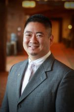

Pastor John Kim - Lighthouse Bible Church
Topic: More to this Life
Bio:
John was born in South Central Los Angeles during the year of the first LA Watts Riots in 1965. After growing up near downtown LA, he moved to the San Fernando Valley where he started attending a Baptist church in 7th grade after his mother had become a Christian. It was during a summer camp in the summer of 1978 that John heard the gospel presented clearly and gave his life to Christ. Shortly after, he started attending Grace Community Church and grew tremendously under the ministry of John MacArthur and various youth pastors and staff who invested in his life. Exposure to the Korean American culture while attending UCLA gave John the opportunity to share his ministry experiences at various churches and it was after his sophomore year that he sensed God’s calling to go into ministry. After graduating from UCLA in 1988 with a degree in psychology, John started attending the Master’s Seminary and graduated in 1991.
John has been married to his wife Angela since 1989 and has four daughters: Jenna, Kara, Alyssa, and Olivia.
John started his ministry at Grace Community Church, serving in the children’s and youth ministries as a volunteer staff member from 1979-1985, and as a pastoral intern for the junior high department in 1988. He went on to become a youth pastor at Valley Korean Community Church in Sylmar, CA, also helping develop a full-fledged English-speaking ministry, one of the first of its kind at the time. He went on to help start an English-speaking ministry in Columbia, Maryland from 1993-1997. After taking some time off of ministry, John and his family helped plant a church in San Diego in the summer of 1998, which became Lighthouse Bible Church of San Diego. After serving as senior pastor for 12 years, the vision of church planting became a reality as John and his family joined a team of about thirty people to plant Lighthouse Bible Church San Jose in the summer of 2010.
The decision to plant a church in LA began with a view toward the long term future of not only church planting but in raising and training pastors for church planting as well as for placement in developing churches in varying pastoral roles. So the summer of 2013 brought a transition for John and his family to relocate to the greater LA region and the San Gabriel Valley was chosen as the area to plant a new church as well as to be a place where the development of a training and networking ministry could take place that would provide a cooperative relationship between the existing Lighthouse churches as well as for the future. So after twenty years, the Lord has brought John’s family full circle in returning to Los Angeles and there is a great hope and anticipation of God’s provision to pass on the greatness of God to the next generation (Psalm 145:4).